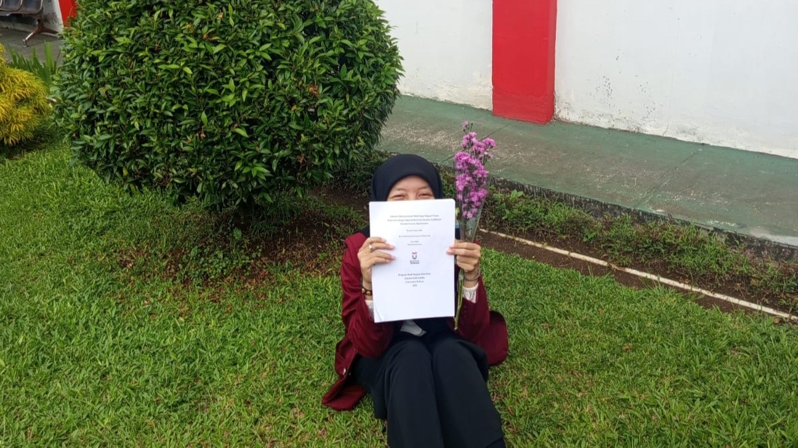

Intro

My name is Mayesq Prameswari, commonly known as Esq. I was born in Balikpapan, Indonesia. As the eldest child, I have two younger siblings. I lived in Tarakan for approximately 16 years before finally deciding to move to Java to pursue my education.
I occasionally play the guitar, sing, edit videos, take photos, and explore other interesting things, though Im not particularly skilled at any of them. I enjoy coffee, matcha, cheese, walking, neatness, and technology. Eventually, I developed a lofty dream, though it may sound impossible, to go to Japan because it aligns with the things I love.
I recently realized that I enjoy the feeling of critically thinking about something and then expressing my ideas in writing. So, you can see the results of my published articles here.
Publications
International Journal
-
M. Prameswari, P. E. Kania, I. G. D. Ayu, S. N. P. Harnoko, T. F. Albar, U. Athiyah, and L. N. Bayyinah, "A Multimodal Deep Learning System for Soil Plant Analysis Development (SPAD) Prediction on Spinach Leaves," Tehnički glasnik, vol. 21, no. 3, pp. 1-10, 2027. [LoA issued].
-
M. Prameswari, R. Pandiya, and A. L. R. Putri, "Hyperparameter Optimization of Multi-Target Support Vector Regression with Sigmoid Particle Swarm Optimization-based Acceleration Coefficients for Electricity Consumption Prediction," Applications of Modelling and Simulation, vol. 10, pp. 28-37, 2026. [Link].
National Journal
-
A. Widiyanto, R. Candraningtyas, A. F.F, M. Prameswari, H. Bashiran, G. Surahmat, B. Rahmah, A. A. Manika Dewi, and A. Yunus, "TelUP Human Fall Dataset: A Motion Forecasting Study of Human Falls," JURNAL INFOTEL, vol. 17, no. 3, pp. 456-471, 2025. doi.org/10.20895/infotel.v17i3.1420.
-
A. Widiyanto, M. Prameswari, and M. Abdul Latief, "Gambling Comments Detection on Youtube: A Comparative Study of Tree-Based Boosting, LSTM and GRU Models," JUTI: Jurnal Ilmiah Teknologi Informasi, vol. 23, no. 2, pp. 144-160, 2025. doi.org/10.12962/j24068535.v23i2.a1305.
-
A. Widiyanto and M. Prameswari, "Optimalisasi Pengelolaan Data Tumbuh Kembang Anak PAUD dengan Aplikasi Excel: Studi Kasus KB Kenanga Desa Pesantren," Jurnal Pengabdian Sosial, vol. 2, no. 2, pp. 2853-2863, 2024. doi.org/10.59837/pj95y776.
Proceedings
-
M. Prameswari, P. Kania, I. G. Ayu, and S. N. Harnoko, "Penerapan Metode Stacking Ensemble Untuk Klasifikasi Status Pinjaman Nasabah Bank," PROSIDING SEMINAR NASIONAL SAINS DATA, vol. 4, no. 1, pp. 802-811, 2024. doi.org/10.33005/senada.v4i1.339.
Achievements
Awards & Grants
-
Recipient of Telkom University Internal Community Service Grant: Training on Child Growth and Development Detection System (DDTK) for Early Childhood Education at KB Kenanga, Pesantren Village, 2025. Evidence.
Intellectual Property Rights
-
Official Intellectual Property Rights (HAKI) Holder: "Sistem Prediksi Kandungan Klorofil pada Daun Bayam" (Computer Program). Registration Number: 000949982, issued on August 11, 2025. Evidence.
Language Certifications
-
TOEIC Listening and Reading: Official Score Certificate with a total score of 720/990 (Test Date: February 3, 2026). Evidence.
-
English Proficiency Test (EPrT): Certified by Telkom University Language Center with a total score of 487/677 (Test Date: December 18, 2025). Evidence.
Contact
Email: mayesq13@gmail.com